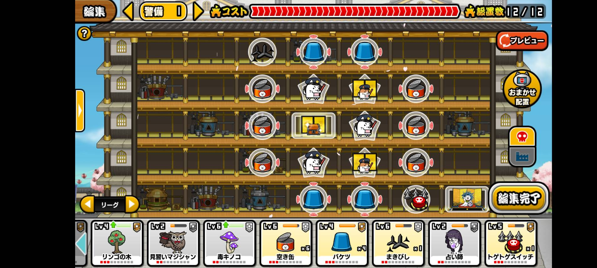
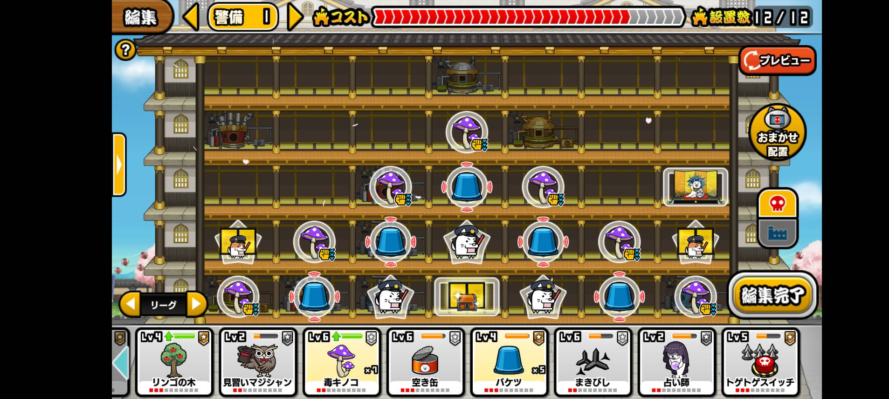
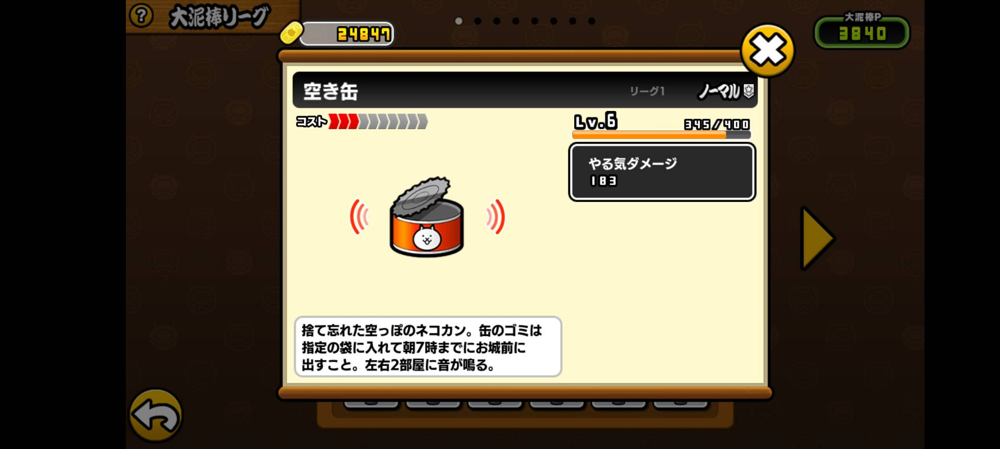

リーグ1
超・初心者リーグ帯
大泥棒ポイント 0 ~ 200
大泥棒の基本が学べるリーグ帯 人が少ない
おすすめ罠配置
その1
空き缶テンプレを改良したもの。リーグ1にずっととどまるより、さっさと次のリーグに上がったほうが何かと都合がいいのでほぼ使われることはないだろう。

その2
毒キノコとバケツを置きまくったもの。レベルが低いとやる気の減りが遅いが攻めのやる気も少ないのでトントンくらいか。

使用可能罠
空き缶
レア度: ノーマル
コスト: 3
効果: 横2マスずつに音を鳴らす
ゲーム内解説: 捨て忘れた空っぽのネコカン。缶のゴミは指定の袋に入れて朝7時までにお城前に出すこと。左右2部屋に音が鳴る。
リーグ1からリーグ8まで、すべてのリーグでよく見る罠。
高リーグになるとやる気ダメージが高くなるので注意が必要。
よくテンプレに使われている。

随時更新中...